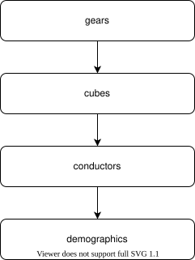

Pilot Study

The order, in which had the participants solve tasks.
We ran a pilot study, to estimate the average time it takes a human or robot to complete a single operation. For that, we asked participants to complete a simple task for each task-domain.
To make evaluation easier, we performed task in a specific order:
Needed documents:
Einverständniserklärung
Teilnehmereinweisung